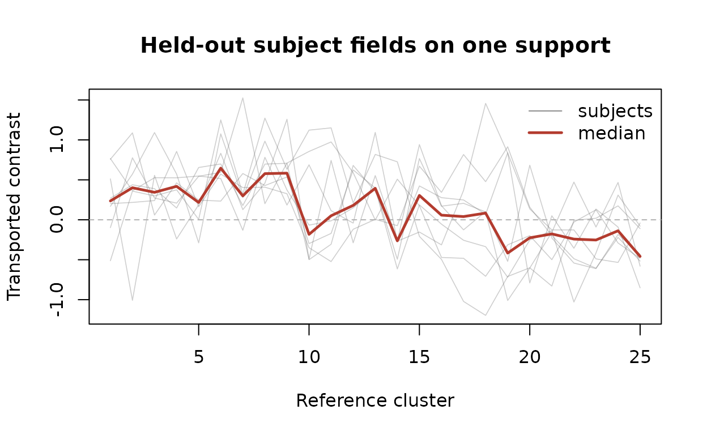
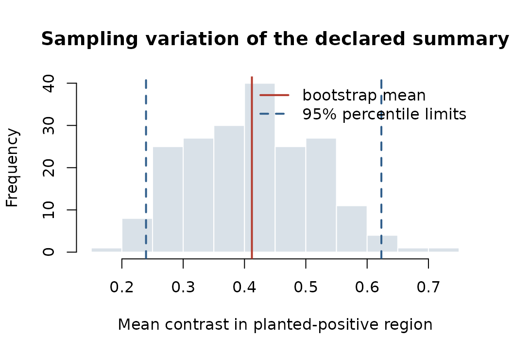

“Run inference on the DKGE fit” is not a complete instruction. A component statistic, a named effect contrast, and a featurewise transported map have different sampling units and answer different questions, so the first decision is which quantity you are making a claim about.
This vignette follows one estimand from construction to interpretation: the subject-level effect-1 minus effect-2 contrast on a shared simulated spatial support. It then distinguishes that contrast estimand from component-level inference and shows how a subject bootstrap quantifies sampling variation conditional on the fitted basis and transport operators.
Why start from the estimand? Because “run inference on the DKGE fit” is not a complete instruction. A component statistic, a named effect contrast, and a featurewise transported map have different sampling units and answer different questions. Here the object journey is explicit:
named effect contrast -> held-out subject fields -> one shared spatial support -> subject resamplingThe component-level procedure appears afterward as a deliberate contrast: it is a different branch, not another test of the same quantity.
What signal should the contrast recover?
The first two effect rows contain opposite halves of a smooth spatial
signal, so their raw contrast equals planted. The remaining
effects contain noise. Every subject uses the same cluster ordering with
small coordinate jitter, giving the transport step a known target while
retaining subject variation.
library(dkge)
S <- 8; q <- 4; P <- 25; T <- 60
effect_names <- paste0("effect", seq_len(q))
cluster_axis <- seq(-1, 1, length.out = P)
planted <- exp(-5 * (cluster_axis + 0.35)^2) -
0.65 * exp(-7 * (cluster_axis - 0.45)^2)
truth <- matrix(0, q, P, dimnames = list(effect_names, NULL))
truth[1, ] <- planted / 2
truth[2, ] <- -planted / 2
betas <- lapply(seq_len(S), function(s) {
truth + matrix(rnorm(q * P, sd = 0.30), q, P)
})
designs <- lapply(seq_len(S), function(s) {
X <- matrix(rnorm(T * q), T, q)
X <- qr.Q(qr(X))
colnames(X) <- effect_names
X
})
reference_centroids <- cbind(x = 10 * cluster_axis, y = 0, z = 0)
centroids <- lapply(seq_len(S), function(s) {
reference_centroids + matrix(rnorm(P * 3, sd = 0.02), P, 3)
})
subjects <- lapply(seq_len(S), function(s) dkge_subject(betas[[s]], designs[[s]], id = paste0("sub", s)))
bundle <- dkge_data(subjects)
fit <- dkge(bundle, K = diag(q), rank = 3)
fit$centroids <- centroids # attach for transport helpers; pass explicitly in productionCan the selected kernel represent the estimand?
The contrast is expressed in the original effect basis, but DKGE
queries it after pooled-design scaling and through K. With
a singular kernel, a contrast can be fully represented, partly projected
into null(K), or lost entirely. Run this preflight before
cross-fitting:
contrast_vec <- c(1, -1, 0, 0) # effect1 minus effect2
preflight <- dkge_contrast_diagnostics(fit, contrast_vec)
preflight$estimability
#> contrast status support_fraction null_fraction query_norm
#> 1 contrast1 estimable 1 0 0.5
preflight$summary
#> $n_contrasts
#> [1] 1
#>
#> $n_pairs
#> [1] 0
#>
#> $n_collisions
#> [1] 0
#>
#> $max_abs_query_correlation
#> [1] NA
#>
#> $max_query_correlation
#> [1] NA
#>
#> $max_query_pair
#> character(0)
#>
#> $min_query_norm
#> [1] 0.5
#>
#> $max_query_norm
#> [1] 0.5
#>
#> $collinearity_tol
#> [1] 0.05The identity kernel has full rank, so the planned contrast is
estimable. The diagnostic table reports the fraction retained in
image(K) and the fraction lost to null(K). For
multiple contrasts, preflight$pairs also identifies
distinct inputs that become nearly proportional kernel queries. The
compact summary reports the maximum absolute query correlation, its
contrast pair, and the observed query-norm range.
Numerical support and practical collinearity use separate thresholds.
tol remains the small null-space tolerance.
collinearity_tol = 0.05 flags distinct queries with
absolute correlation at least 0.95; set it more strictly when that is
scientifically justified, or to NULL to disable collision
flags. The next kernel is full rank, so both single-effect contrasts are
estimable, but their queries are already almost the same:
K_near <- diag(q)
K_near[1:2, 1:2] <- matrix(c(1, 0.98, 0.98, 1), 2, 2)
fit_near <- dkge(bundle, K = K_near, rank = 3)
near_preflight <- dkge_contrast_diagnostics(
fit_near,
list(effect1 = c(1, 0, 0, 0), effect2 = c(0, 1, 0, 0))
)
near_preflight$estimability
#> contrast status support_fraction null_fraction query_norm
#> 1 effect1 estimable 1 2.65e-32 0.354
#> 2 effect2 estimable 1 2.65e-32 0.354
near_preflight$summary
#> $n_contrasts
#> [1] 2
#>
#> $n_pairs
#> [1] 1
#>
#> $n_collisions
#> [1] 1
#>
#> $max_abs_query_correlation
#> [1] 0.98
#>
#> $max_query_correlation
#> [1] 0.98
#>
#> $max_query_pair
#> contrast1 contrast2
#> "effect1" "effect2"
#>
#> $min_query_norm
#> [1] 0.354
#>
#> $max_query_norm
#> [1] 0.354
#>
#> $collinearity_tol
#> [1] 0.05
near_preflight$pairs
#> contrast1 contrast2 query_correlation input_correlation collision
#> 1 effect1 effect2 0.98 2.89e-17 TRUEThis is a practical collision, not a null-space failure.
dkge_contrast() emits the same warning automatically and
stores the summary under metadata$kernel_query_summary.
The following deliberately bad kernel merges effect 1 with effect 2.
Each single-effect query is only partly represented, their transformed
queries are identical, and the intended difference lies wholly in
null(K):
K_merged <- diag(q)
K_merged[1:2, 1:2] <- 1
fit_merged <- suppressWarnings(dkge(bundle, K = K_merged, rank = 3))
merged_preflight <- dkge_contrast_diagnostics(
fit_merged,
list(
effect1 = c(1, 0, 0, 0),
effect2 = c(0, 1, 0, 0),
effect1_minus_effect2 = contrast_vec
)
)
merged_preflight$estimability
#> contrast status support_fraction null_fraction
#> 1 effect1 partially_estimable 5.00e-01 0.5
#> 2 effect2 partially_estimable 5.00e-01 0.5
#> 3 effect1_minus_effect2 null 2.47e-32 1.0
#> query_norm
#> 1 3.54e-01
#> 2 3.54e-01
#> 3 1.00e-16
merged_preflight$pairs[merged_preflight$pairs$collision, ]
#> contrast1 contrast2 query_correlation input_correlation collision
#> 1 effect1 effect2 1 2.89e-17 TRUEdkge_contrast() errors for the null contrast rather than
returning a plausible zero map. For partly represented contrasts it
warns and stores both tables in
metadata$kernel_estimability and
metadata$kernel_query_pairs.
Leave-One-Subject-Out (LOSO) Contrasts
The LOSO approach refits the latent basis without each held-out
subject before computing that subject’s contrast field. This limits
basis-reuse optimism; it does not by itself guarantee unbiased
population inference. The public
dkge_contrast(..., method = "loso") path returns those
subject-specific fields. Alignment then needs a declared feature channel
and an identified reference support; it cannot be inferred from
coordinates alone.
loso <- dkge_contrast(fit, contrast_vec, method = "loso")
alignment_features <- dkge_alignment_features(
fit,
loso,
feature_source = "same_data_residualized",
effect_noise_cov = lapply(designs, function(X) solve(crossprod(X)))
)
transported <- dkge_transport_contrasts_to_reference(
fit,
loso,
alignment_features = alignment_features,
centroids = centroids,
selection_method = "geometry_only",
mapper = dkge_mapper_spec("sinkhorn", epsilon = 0.05, lambda_spa = 1,
max_iter = 5000, tol = 1e-4)
)
str(loso$values, max.level = 1)
#> List of 1
#> $ contrast1:List of 8
loso$metadata$kernel_estimability
#> contrast status support_fraction null_fraction query_norm
#> 1 contrast1 estimable 1 0 0.5Keep the three representations distinct. loso$values
contains raw subject-level fields on the original subject supports.
transported[[1]]$subj_values is the
subject-by-reference-cluster matrix after alignment.
transported[[1]]$value is only the coordinate-wise median
of that matrix. Inference needs the subject rows, not just the median
curve.
This vignette has only the fitted beta maps, so it uses the opt-in
contrast-residualized feature mode and a geometry-only reference choice.
The alignment is explicitly approximate:
residualization does not remove the estimated truncated-span dependence.
For the recommended independent-channel workflow, held-out functional
reference selection, and a learned template, see
vignette("dkge-functional-alignment").
We summarize the region where the planted raw contrast is largest. DKGE projection and transport change the numerical scale, so agreement in direction is meaningful here; equality to the raw planted amplitude is not expected.
active_region <- which(planted >= stats::quantile(planted, 0.80))
active_subject_values <- rowMeans(
transported[[1]]$subj_values[, active_region, drop = FALSE]
)
contrast_summary <- data.frame(
target = "mean transported contrast in planted-positive region",
estimate = mean(active_subject_values),
subject_sd = sd(active_subject_values),
positive_subjects = sum(active_subject_values > 0),
n_subjects = length(active_subject_values)
)
contrast_summary
#> target estimate subject_sd
#> 1 mean transported contrast in planted-positive region 0.404 0.307
#> positive_subjects n_subjects
#> 1 8 8In this seeded example, the active-region estimate is 0.404, and 8 of 8 subjects have the planted positive direction. This is recovery evidence for the simulation, not a population effect size or external validation result.
Plot the subject fields as well as their summary. Agreement in shape is more informative than a polished median with its heterogeneity hidden.
loso_medoid <- transported[[1]]$value
subject_fields <- transported[[1]]$subj_values
matplot(
t(subject_fields), type = "l", lty = 1, lwd = 0.8,
col = grDevices::adjustcolor("grey45", alpha.f = 0.35),
xlab = "Reference cluster", ylab = "Transported contrast",
main = "Held-out subject fields on one support"
)
abline(h = 0, col = "grey70", lty = 2)
lines(loso_medoid, col = "#b33b2e", lwd = 2.4)
legend("topright", legend = c("subjects", "median"),
col = c("grey55", "#b33b2e"), lwd = c(1, 2.4), bty = "n")
The median follows the planted positive and negative regions, while the grey lines show the uncertainty and subject heterogeneity that the next stage must respect. This figure is a recovery diagnostic for the simulation, not a multiple-comparison-corrected spatial result.
Legacy component display is descriptive
dkge_component_stats() is deprecated because it learns
correspondence from the same full-fit component loadings it then
summarizes. It remains available for descriptive migration output only
and refuses every inferential option.
comp_stats <- suppressWarnings(dkge_component_stats(
fit,
components = 1:2,
mapper = dkge_mapper_spec("sinkhorn", epsilon = 0.05, lambda_spa = 0.5,
max_iter = 2000, tol = 1e-4),
centroids = centroids,
inference = NULL,
medoid = 1L
))
head(comp_stats$summary)
#> component cluster mean sd n_subjects
#> 1 1 1 1.022 0.475 8
#> 2 1 2 0.322 0.494 8
#> 3 1 3 0.133 0.469 8
#> 4 1 4 1.034 0.614 8
#> 5 1 5 1.148 0.655 8
#> 6 1 6 1.601 0.363 8The table reports only component, reference-cluster index, mean,
standard deviation, and subject count. It contains no statistic,
p-value, adjusted p-value, or significance flag. Typed group inference
starts by applying fitted operators with
dkge_transport_contrasts_to_reference() or
dkge_align_to_template(), then uses
dkge_infer_aligned() on the returned operator-bound
maps.
Bootstrap Inference
The following nonparametric subject bootstrap resamples the already transported contrast vectors and recomputes their mean. It estimates sampling variation conditional on the fitted basis, chosen medoid, and fixed transport operators; it does not propagate uncertainty from those earlier steps.
aligned_for_bootstrap <- attr(transported, "aligned_maps")
boot <- dkge_bootstrap_projected(
aligned_for_bootstrap,
contrast = 1,
B = 200,
seed = 2,
allow_approximate_alignment = TRUE
)
head(boot$medoid$mean)
#> cluster_1 cluster_2 cluster_3 cluster_4 cluster_5 cluster_6
#> 0.254 0.344 0.442 0.358 0.254 0.728For the declared active-region summary, the bootstrap distribution is:
active_boot <- rowMeans(boot$medoid$boot[, active_region, drop = FALSE])
bootstrap_summary <- data.frame(
bootstrap_mean = mean(active_boot),
lower_95 = unname(stats::quantile(active_boot, 0.025)),
upper_95 = unname(stats::quantile(active_boot, 0.975))
)
bootstrap_summary
#> bootstrap_mean lower_95 upper_95
#> 1 0.412 0.239 0.623
The resulting conditional 95% percentile interval is [0.239, 0.623]. Because the earlier basis and transport operators are held fixed, this interval should not be described as unconditional uncertainty for the full DKGE pipeline.
dkge_bootstrap_projected() also returns coordinate-wise
means, standard deviations, z ratios, intervals, and (optionally) the
draws used above. It accepts only typed aligned maps and preserves their
fixed subject weights. The explicit override is required here because
this example uses same-data residualized features and is labelled
approximate. When the estimand lives in q-space instead,
dkge_bootstrap_qspace() requires a validated typed fitted
alignment and a separate explicit approximate-alignment override. Its
stored MFA/energy weights reweight only the bootstrap pooled moment;
subject maps are aggregated under an equal-subject base estimand using
the multiplier draws alone. The returned metadata records these two
weighting roles separately.
What to check before reporting
Choose the inferential target before choosing a procedure. The legacy component table only describes transported component loadings; the projected bootstrap above summarizes an explicit contrast after typed transport. Subject resampling still requires representative, independent subjects and enough observations for the empirical distribution to be informative.
Before reporting results, state the contrast, kernel rank and nullity, retained support fraction, participation-ratio effective rank, maximum planned-query correlation, analysis space, aggregation rule, resampling unit, mapper, medoid, and multiplicity correction. Report any transformed-query collision; changing the contrast label does not create a distinct estimand after the kernel has merged or nearly merged it. Inspect subject-level values as a diagnostic, but do not remove unusual subjects without a prespecified rule and sensitivity analysis.
Where to go next
-
vignette("dkge-components")reads the fitted components themselves, where this page reads a prespecified contrast. -
vignette("dkge-between-subjects")is the confirmatory route for between and mixed effects, which LOSO contrasts do not test. -
vignette("dkge-dense-rendering")maps a contrast field into a shared space once you have one worth mapping.